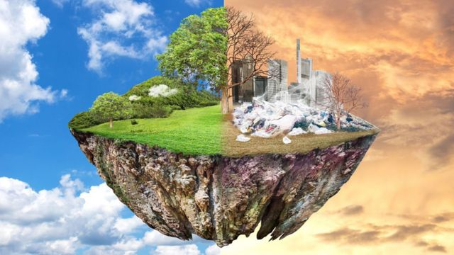

El Medio Ambiente y su Importancia en Nuestros Dias
El medio ambiente siempre ha sido un tema bastante debatido y tocado como tema principal a lo largo de nuestra historia y hoy en dia tampoco es la excepcion.
Leer mas...El medio ambiente siempre ha sido un tema bastante debatido y tocado como tema principal a lo largo de nuestra historia y hoy en dia tampoco es la excepcion.
Leer mas...Otro factor que no se debe olvidar es la explotacion de los recursos ya que hay dos formas de hacerlo la correcta y la incorrecta por ejemplo, podemos mencionar la tala de arboles que no esta mal en cierta forma porque ocupamos papel, lapiz, herramientas o muebles que tengan que ver con madera el lado malo es que hay empresas que suelen explotar de forma brutal los arboles a tal grado de llegar al desperdicio.
Leer mas...Las fabricas que impliquen algun indole toxico y nosivo para el aire no puede ser motivo de represalias ya que ayudan al sector economico a empleados y al PIB (Producto Interno Bruto) pero viendolo del lado positivo se hace una inspeccion para que se llegue a tener la menos contaminacion posible a terrenos, ecosistemas y ambientes de vegetacion natural.
Leer mas...